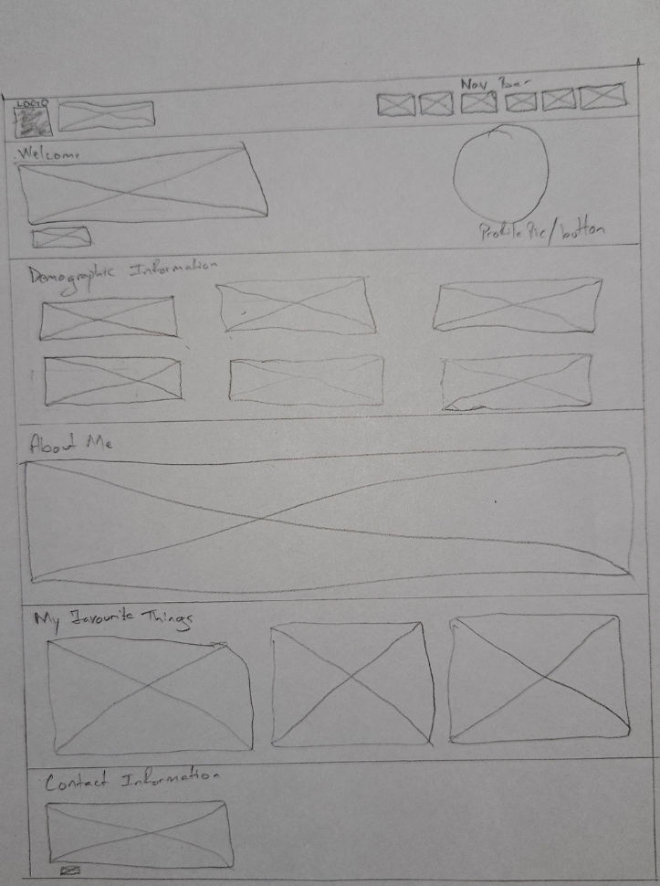
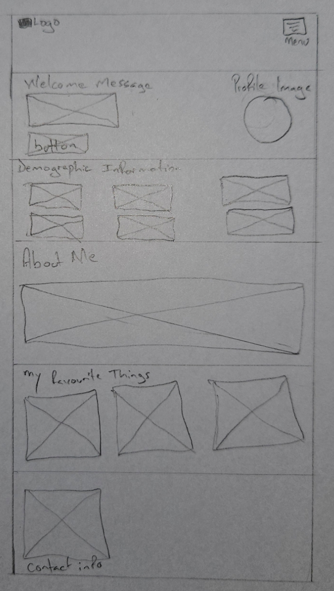
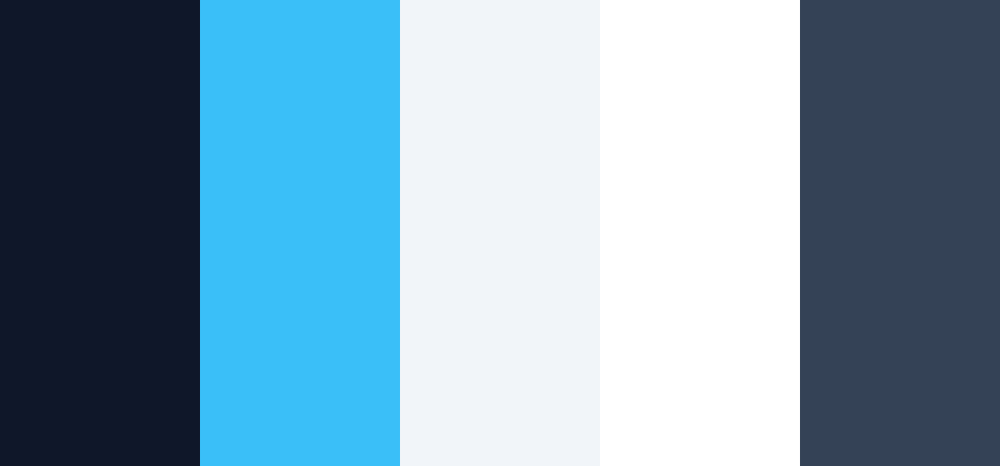

Storyboard and Design Plan
This storyboard presents the planned design for my personal portfolio website. It shows how the website will be arranged on desktop and mobile screens. It also includes the colour palette, typography, image dimensions, layout groups, navigation plan, GitHub repository link, hosting link, and storyboard PDF link.
The purpose of this storyboard is to guide the development of the website before and during coding. It helps ensure that the final webpages match the planned layout and maintain a consistent design theme.
Desktop Layout Design
The desktop layout is designed for screens with a minimum width of 950px. In this layout, the logo and website title are placed on the left side of the header, while the navigation menu is placed on the right side.
The welcome section uses a two-column layout. The welcome message and button appear on one side, while the profile image appears on the other side. The demographic information and favourite things sections use card-style layouts to keep the information neat and easy to read.

Mobile Layout Design
The mobile layout is designed for screens with a minimum width of 600px. This layout uses a simplified structure so the content is easier to read on smaller screens. The logo is placed at the top, and the menu icon represents the mobile navigation area.
The welcome message, button, and profile image are placed near the top of the page. The demographic information cards are arranged in a smaller layout, while the About Me, Favourite Things, and Contact Information sections are stacked vertically.

Layout Groups and Div Structure
The website layout is divided into clear groups so that each part of the page can be organized and styled properly using CSS.
- Header group: Contains the logo, website title, and navigation menu.
- Logo area: Groups the website logo and the portfolio title together.
- Navigation group: Contains links to the Home, Resume, Personality, Development, Storyboard, and References pages.
- Hero group: Contains the welcome message, call-to-action button, and profile image.
- Demographic group: Contains cards with personal, academic, and career information.
- About group: Contains a short description about me.
- Favourite things group: Contains cards for favourite book, movie, and technology area.
- Contact group: Contains email, GitHub, and location information.
- Footer group: Contains copyright information.
Colour Palette
The website uses a professional colour palette with dark blue, sky blue, light grey, white, and dark blue-grey. This colour scheme was selected because it gives the portfolio a clean, modern, and technology-focused appearance.

| Colour Name | RGB Value | Purpose |
|---|---|---|
| Navy Blue | rgb(15, 23, 42) | Header, footer, headings, and strong text |
| Sky Blue | rgb(56, 189, 248) | Buttons, links, highlights, and hover effects |
| Light Grey | rgb(241, 245, 249) | Page background |
| White | rgb(255, 255, 255) | Content sections and cards |
| Dark Blue Grey | rgb(51, 65, 85) | Paragraph text and supporting information |
Typography
The typography is simple and readable. This helps users clearly understand the information on both mobile and desktop screens.
- Font family: Arial, Helvetica, sans-serif
- Root font weight: 400
- Heading font weight: 700
- Body text size: 16px
- Main heading size: 32px
- Section heading size: 24px
Images, Icons, and Dimensions
All images and media files will be stored inside the Assets folder. Each image will include an alt attribute to improve accessibility.
- Logo file: logo.png
- Logo dimensions: 60px by 60px
- Profile image dimensions: 300px by 300px
- Desktop wireframe file: wireframe-desktop.jpg
- Mobile wireframe file: wireframe-mobile.jpg
- Colour palette file: color-palette.png
- Icons: Simple portfolio, technology, and cybersecurity-style icons
Navigation Plan
The navigation bar appears at the top of every webpage. It allows users to move easily between the main pages of the portfolio website.
- Home: Introduces the portfolio and includes demographic information.
- Resume: Presents education, skills, professional experience, mission, and vision.
- Personality: Discusses personality traits, hobbies, hero or mentor, and AI business idea.
- Development: Includes reflections on Chapters 4 to 7 of Twelve Pillars.
- Storyboard: Displays the design plan, wireframes, colour palette, and project links.
- References: Lists the sources used in APA format.
Responsive Design Plan
The website will use CSS media queries to adjust the layout for different screen sizes. This will make the website usable on mobile, tablet, and desktop screens.
- Mobile layout, 600px and above: Content is stacked vertically, and cards are arranged in a simple layout for easier reading.
- Desktop layout, 950px and above: The header becomes wider, the navigation appears horizontally, and content cards are arranged in columns.
- Layout method: CSS Flexbox and CSS Grid will be used to create organized and responsive sections.
Project Links
These links will direct yo to the relevant website for this portfolio.
- GitHub Repository: View My GitHub Repository
- Free Hosting Link: View My Hosted Website
- Free Hosting Link: View Storyboard PDF